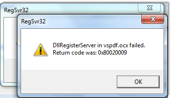

Home
Tutorial
Introduction
As users have started to migrate off Windows XP onto Vista & Windows 7, the new PC environments have not been correctly set up to reflect the environment being left behind, so many are having initial problems in printing.
|
|
Issue
Having migrated to one of the current Windows Vista or Windows 7 releases, the new workstations are given access to the usual PowerForce shortcut on the server, and upon an initial attempt to print, users are being thrown the following warning message, and no printing coming through.

If you want more information on what this is about click on the following Windows Resource Protection.
Cause
When PowerForce goes to print, it calls these two programs in the error message to do its printing. The first thing that happens is that Windows notices these two programs as not correctly configured on the new PC, and so it tries to configure the programs for you.
However, your IT has configured that your PC login cannot do anything that involves administrative tasks such as any configuration. Therefore you receive the above messages.
Top of Page
Registering the components
To overcome the problem, you must raise your profile to that of Administrator, so that you may perform configuration changes to your PC. For each PC that uses PowerForce, you need to register two .dll files which relate to the printing.
You will find the files in the working directory of PowerForce on the server - (e.g. P:\OINSIGHT)
Once you have found two files, you'll need to execute the following commands :
Use regsvr32.exe to register the following 2 DLLs
- vspdf.ocx (vspdf)
- vsprint7.ocx (vsprint7)
The alternate way to achieve the same result is to start up your PowerForce session "as Administrator", which hands off the registration to PowerForce. It's the same result, just two different paths to complete the task.
Top of Page
Explanation
DllRegisterServer in vspdf.ocx failed & DLLRegisterServer in vsprint7.ocx failed.
PowerForce like many other products use generic components to perform every day processes such as printing, and this message is saying that two routines (which have tried to auto register themselves) are unable to the registered in the user "hive". Whilst this might be quite over the top for the average layman, it is a simple fact of how Windows software is developed and used.
Your new PC has been "dumbed" down by IT, so that you the user cannot introduce viruses etc onto your PC, so you have go through the familiar Windows "are you sure this is what you want to do" mantra.
The issue is the client was not a local administrator. Using another account with admin to perform the task did not work in this instance.
The fix was granting administrator privileges logging on as “Shane” registering the *.ocx files.
Testing the reports
Removing the permissions
Logging off
Logging on
Then testing again.
See Also
 PowerForce Controls PowerForce Controls
Alternate article on registration problem
Explanation of regsvr32 usage & error messages
How regsvr32 registers / unregisters COM dlls
The regsvr32 command
Top of Page
|